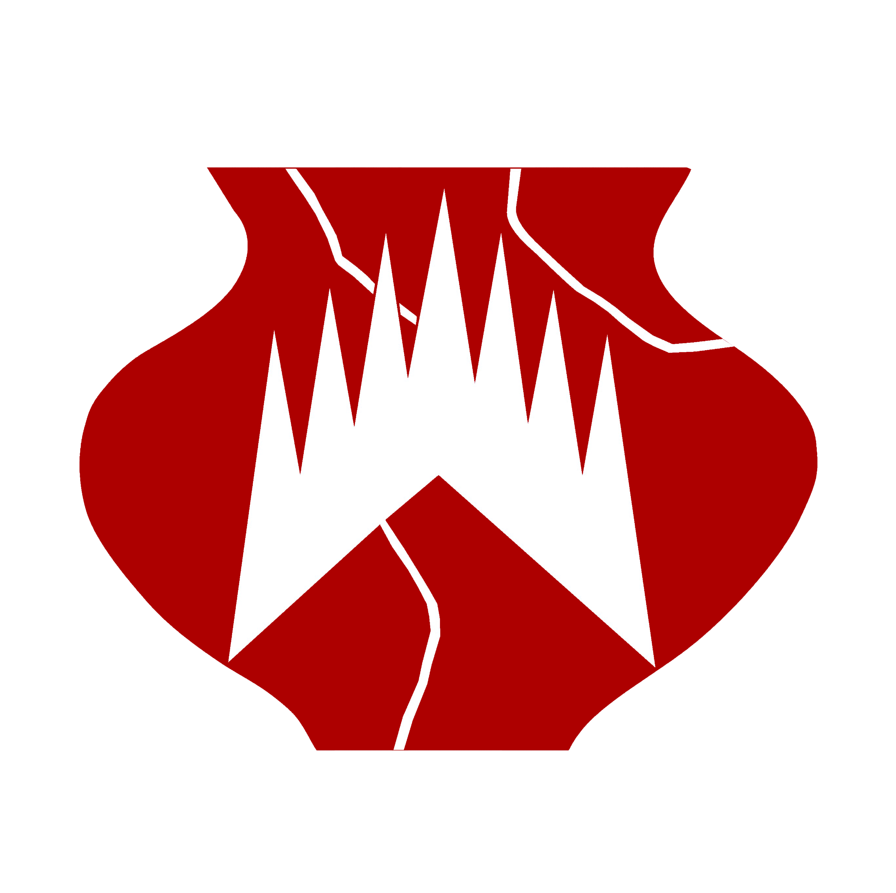

Muzeum regionu Boskovicka 3D prohlížeč
Vyberte 3D model, který chcete prozkoumat.
shadow-intensity="0" auto-rotate style="width: 100%; height: 500px;">
Načítání modelu...
Zpět na seznam modelů
Zobrazit v AR (pouze GLB)